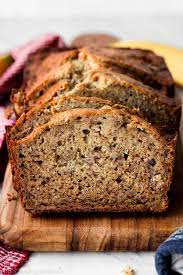

Banana Bread

Put those ripe bananas to use in the best banana bread recipe ever. Moist and delicious, it's easy to make—one bowl, no need for a mixer!
Ingredients
- 3 medium very ripe bananas
- 1/3 up butter, melted
- 1/2 tsp baking soda
- 1 pinch salt
- 3/4 cup sugar
- 1 large egg
- 1 tsp vanilla extract
- 1.5 cups flour
Steps
- Preheat oven to 350 deg. F.
- Butter an 8x4 inch loaf pan.
- Mash the bananas and add the butter.
- Mix in the remaining ingredients.
- Pour into loaf pan.
- Bake for 55 to 65 minutes.